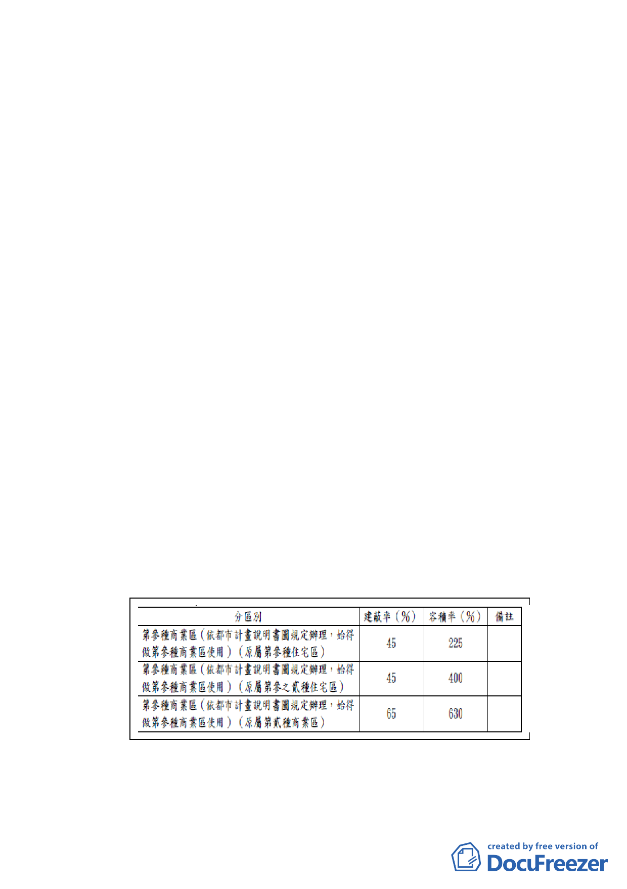

（一）本計畫範圍內現為九棟四層樓之老舊公寓住宅，因建築老
舊、結構及防火有安全顧慮，實有辦理都市更新之必要。
該範圍前於 97 年 07 月 02 日經市府劃定為更新單元，但由
於現況建築容積高、改建誘因不足，導致整合困難，迄今
無法順利重建。
（二）因本計畫區屬第參種商業區（依都市計畫說明書圖規定辦
理，始得做第參種商業區使用）（原屬第參種住宅區、第參
之貳種住宅區及第貳種商業區）、計畫面積達 2,000 平方公
尺以上且四、五層樓戶數達計畫範圍總戶數 1/3 以上，皆
符合申請條件，且其不造成街廓內相鄰土地無法劃定更新
單元，故實施者水美開發實業股份有限公司依本府於 101
年 11 月 27 日公告「修訂臺北市老舊中低層建築社區辦理
都市更新擴大協助專案計畫」，期爭取本專案相關容積獎
勵，改善居住及周邊環境。故爰依都市計畫法第 27 條第 1
項第 4 款規定，辦理本次都市計畫修訂。
二、土地權屬均為私有。
三、計畫內容
（一）修訂土地使用分區管制內容
1. 土地使用強度：本計畫區建蔽率、容積率不得超過下表之規
定：
2. 本計畫範圍之第參種商業區（特）土地使用分區管制項目悉
依84年9月27日府都二字第84064377號公告「修訂臺北市主
-5-